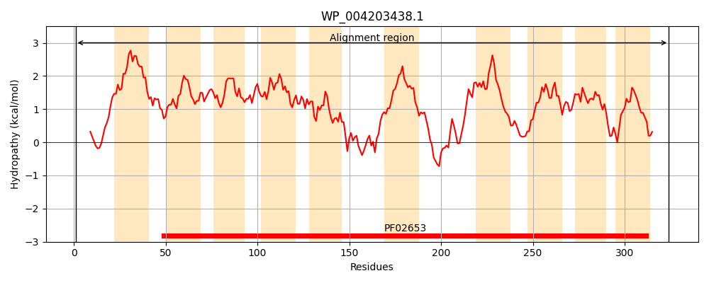
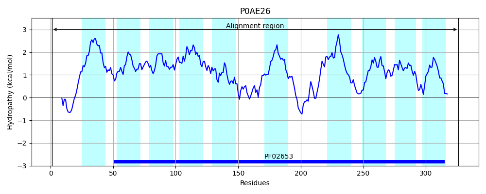
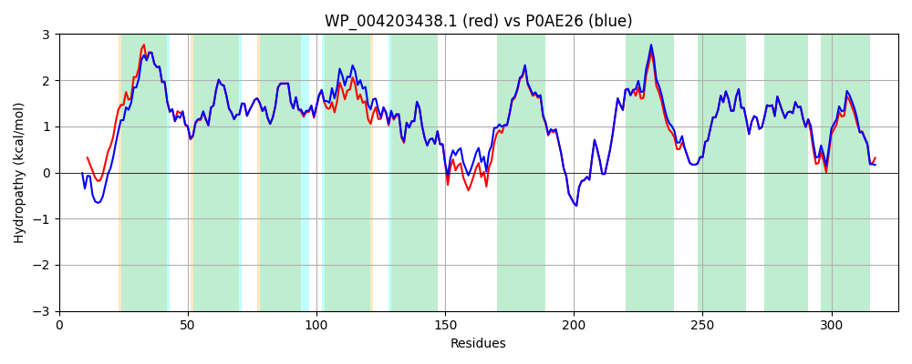

Hit Accession: P0AE26
Hit TCID: 3.A.1.2.2
Hit Description: gnl|BL_ORD_ID|8768 gnl|TC-DB|P0AE26|3.A.1.2.2 L-arabinose transport system permease protein araH - Escherichia coli.
Mach Len: 326
e:0.000000
Query TMS Count : 10
Hit TMS Count: 10
TMS-Overlap Score: 8.700000
Predicted Substrates:CHEBI:22599;arabinose
BLAST Alignment:
Score: 1502 , Bit scores: 583 bits, E-value: 0.0e+00, Alignment length: 326, Percentage identity: 92
Query: 1 MSSVTTSG--ATRSAFSFARIWDQFGMLVVFAVLFIGCVIFVPNFASFVNMKGLGLAISMSGMVACGMLFCLASGDFDLSVASVIACAGVTTAVVINLSESLWLGIAAGLLLGAVSGLVNGFVIARLKINALITTLATMQIVRGLAYIISDGKAVGIEDERFFTLGYANWFGLPAPIWLTVACLVVFGLLLNKTTFGRNTLAIGGNEEAARLAGVPVVRTKIIIFVLSGLVSAAAGIILASRMTSGQPMTSIGYELIVISACVLGGVSLKGGIGKISYVVAGILILGTVENAMNLLNISPFSQYVVRGVILLAAVIFDRYKQKAKR 324
MSSV+TSG A +S+FSF RIWDQ+GMLVVFAVLFI C IFVPNFA+F+NMKGLGLAISMSGMVACGMLFCLASGDFDLSVASVIACAGVTTAVVINL+ESLW+G+AAGLLLG + GLVNGFVIA+LKINALITTLATMQIVRGLAYIISDGKAVGIEDE FF LGYANWFGLPAPIWLTVACL++FGLLLNKTTFGRNTLAIGGNEEAARLAGVPVVRTKIIIFVLSGLVSA AGIILASRMTSGQPMTSIGYELIVISACVLGGVSLKGGIGKISYVVAGILILGTVENAMNLLNISPF+QYVVRG+ILLAAVIFDRYKQKAKR
Sbjct: 1 MSSVSTSGSGAPKSSFSFGRIWDQYGMLVVFAVLFIACAIFVPNFATFINMKGLGLAISMSGMVACGMLFCLASGDFDLSVASVIACAGVTTAVVINLTESLWIGVAAGLLLGVLCGLVNGFVIAKLKINALITTLATMQIVRGLAYIISDGKAVGIEDESFFALGYANWFGLPAPIWLTVACLIIFGLLLNKTTFGRNTLAIGGNEEAARLAGVPVVRTKIIIFVLSGLVSAIAGIILASRMTSGQPMTSIGYELIVISACVLGGVSLKGGIGKISYVVAGILILGTVENAMNLLNISPFAQYVVRGLILLAAVIFDRYKQKAKR 326 | Protein Hydropathy Plots: |
|---|
|  |  |
Pairwise Alignment-Hydropathy Plot:
|
|---|
|  |